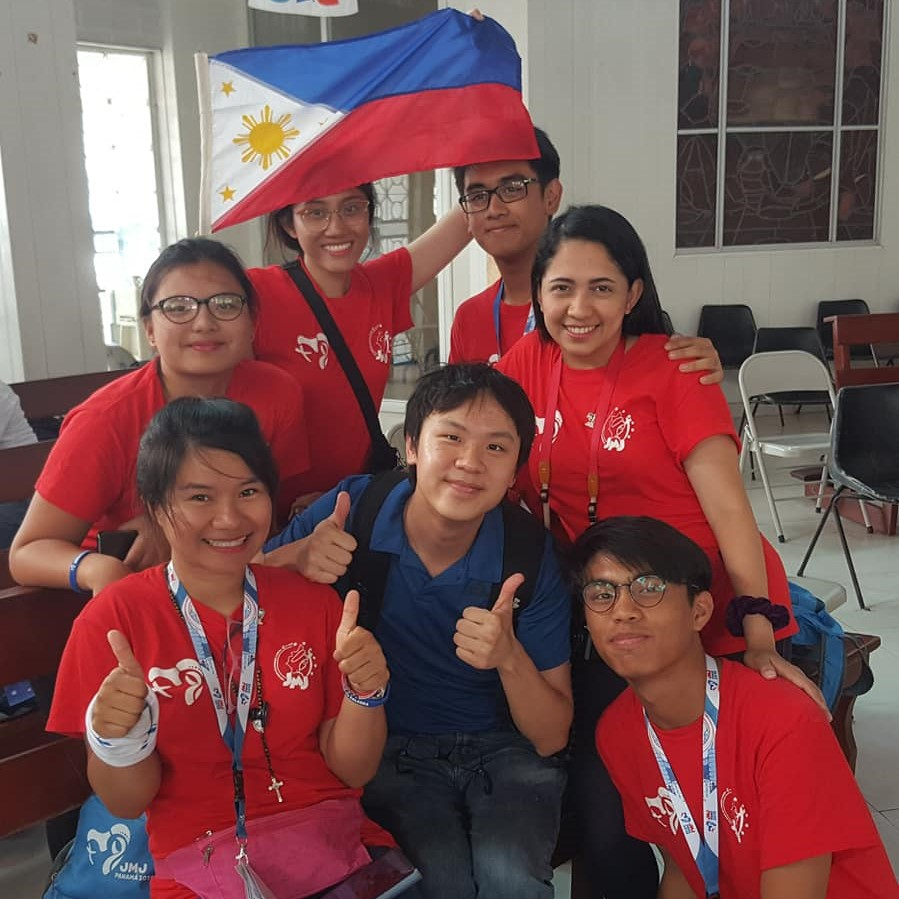
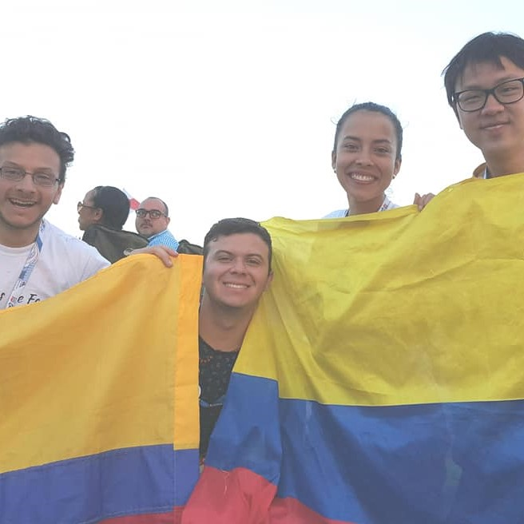

Why Do I Travel?
Countries I've Visited
Mexico, Ireland,
France, Brazil, Colombia, Panama, Vatican City, Italy, Germany, Czechia, Poland, Thailand
Countries I've Lived
Canada,
England,
Malaysia
When discussing about travelling, most people could be easily connected to the topic and would likely discuss their dream vacation locations. Travelling can certainly help promote mental health and life balance as we take a break outside of our daily routines. For me, travelling is not just for leisure; I enjoy travelling simply because that is an indirect, yet effective, way to grow myself professionally to meet my mission statement.
To meet my mission statement of integrating people, I believe some real-life experiences are essential to make myself more culturally competent. I utilize my travels to reach out to different local communities across the world. Many times, I was fortunate to be hosted by locals; these opportunities of staying with locals allowed me to learn their cultures and countries more effectively. It also raised my awareness that people's ways of doing things can be greatly impacted by their cultural background.
Travelling also has made myself more vulnerable to others by seeking appropriate assistance such as asking for directions and local tips. Why is this important? By making myself more vulnerable, I learned how to demonstrate empathy to other vulnerable communities. For example, my awareness on appropriate body language usage has dramatically increased when communicating with non-English speakers. These skills are undoubtedly transferrable to professional settings such as teaching where I greatly value vulnerability.
Some of my casual and cultural networking with people from different countries during my travels are shown below.
Australia
Philippines
Mexico
Nicaragua
Korea
Colombia
Hong Kong